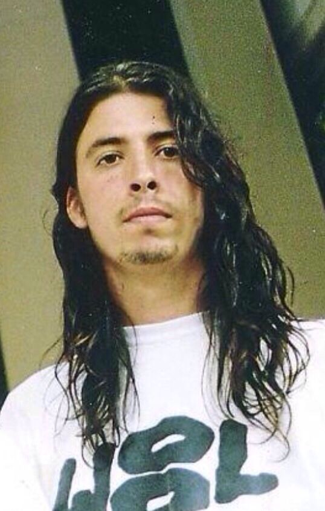

David Eric Grohl, (* 14. ledna 1969, Warren, Ohio, USA) byl bubeník ve skupině Nirvana. V současné době je protagonistou skupiny Foo Fighters. Dave Grohl má slovenský, německý a irský původ. Nirvana už od samého počátku měla problémy s bubeníky a žádný ve skupině nezůstal delší dobu. V září roku 1990 se do Nirvany dostává Dave a téměř okamžitě začne pracovat na novém albu Nevermind, které vychází záhy. Při nahrávání tohoto alba se naplno ukazují Davovy kvality – jeho přesný a tvrdý úder s dokonalým smyslem pro rytmus a jeho plné nasazení do hry. V Nirvaně hrál Dave až do jejího rozpadu po smrti leadera skupiny Kurta Cobaina, stál však v pozadí mediální pozornosti.
